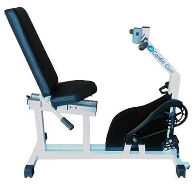

Cardiología integral
Tu salud, nuestro compromiso con la excelencia
Nosotros
En 2019, con una sólida formación adquirida en centros e instituciones de
renombre, decidí
regresar a Neuquén con un objetivo claro: crear un centro de diagnóstico cardiovascular que
combine atención médica de excelencia con tecnología de última generación. Mi compromiso
desde el primer día ha sido ofrecer a cada paciente un trato humano, cercano y basado en los
más altos estándares de la cardiología moderna.
Desde entonces, he tenido el orgullo de formar un equipo de trabajo altamente capacitado,
que
comparte mi pasión por la salud cardiovascular. Nuestra meta en común no es solo brindar la
mejor
atención, sino también seguir creciendo e innovando continuamente. Cada día proyectamos
nuevas formas de
mejorar y expandir nuestros servicios, con la firme convicción de que un equipo en constante
evolución es
clave para mantenernos a la vanguardia.
Creemos en el poder de la tecnología y el conocimiento al servicio de las personas y
trabajamos incansablemente para garantizar que cada paciente reciba un cuidado integral y
personalizado. Me enorgullece ver cómo este sueño sigue creciendo, impulsado por la
confianza y el apoyo de
quienes nos acompañan en este camino.
Misión
Brindar servicios de cardiología clínica y de diagnóstico, haciendo hincapié en la calidad de atención y seguimiento de nuestros pacientes.
Visión
Ser referentes en la región, ofreciendo tratamientos innovadores y un enfoque integral para mejorar la calidad de vida de nuestros pacientes.
Estudios
En nuestro centro, ofrecemos una variedad de estudios cardiovasculares avanzados para realizar diagnósticos precisos y completos. Con tecnología de última generación y un equipo especializado, garantizamos una atención personalizada y de calidad para cuidar tu salud cardiovascular.
ECG Digital

El electrocardiograma (ECG) es un procedimiento simple, indoloro y rápido que registra la actividad eléctrica del corazón. Cada vez que el corazón late, una señal eléctrica circula a través de sus cámaras, permitiendo que se contraigan y bombeen sangre al cuerpo. El ECG muestra estas señales como líneas onduladas, que un profesional de la salud puede interpretar para detectar actividad cardíaca anormal, signos de enfermedad o daño cardíaco.
holter 24 hs
El Holter de 24 horas es un estudio que registra continuamente la actividad eléctrica del corazón durante un día completo. Este procedimiento permite monitorear el ritmo cardíaco en situaciones cotidianas, proporcionando información sobre la frecuencia, regularidad y posibles arritmias que no se detectan en un electrocardiograma convencional.
presurometría
La presurometría de 24 horas es un estudio que mide la presión arterial de forma continua durante un día completo. Este procedimiento proporciona un perfil detallado de las fluctuaciones de la presión arterial en diversas actividades y momentos del día, lo que es esencial para diagnosticar hipertensión y otros trastornos cardiovasculares.
ergometría

La ergometría, o prueba de esfuerzo, es un estudio que evalúa cómo responde el corazón
durante el
ejercicio. A través de esta prueba, se monitorea la actividad cardíaca mientras el paciente
camina enuna cinta o pedalea en una bicicleta estática, aumentando gradualmente el nivel de
esfuerzo.
Este estudio es útil para detectar enfermedades coronarias, medir la capacidad física y
evaluar
la respuesta del corazón al estrés.
ecocardiograma doppler
El ecocardiograma Doppler es un estudio no invasivo que utiliza ultrasonido para evaluar el
funcionamiento del corazón y el flujo sanguíneo a través de sus cavidades y válvulas. Este
procedimiento permite obtener imágenes detalladas en tiempo real del corazón, proporcionando
información sobre su tamaño, forma y el movimiento de sus estructuras internas.
El Doppler, en particular, mide la velocidad y dirección del flujo sanguíneo, lo que ayuda a
detectar problemas como insuficiencias valvulares, estenosis o anomalías en el flujo que
pueden indicar enfermedades cardíacas.
ecodoppler de vasos de cuello
El ecodoppler de vasos de cuello es un estudio no invasivo que utiliza ultrasonido para evaluar el flujo sanguíneo en las arterias carótidas y otros vasos que suministran sangre al cerebro. Este procedimiento permite detectar la presencia de obstrucciones, placas de ateroma o estrechamientos que podrían aumentar el riesgo de accidentes cerebrovasculares.
estudio de la edad arterial
El estudio de la edad arterial es un procedimiento no invasivo que evalúa la rigidez de las arterias, proporcionando una estimación de su "edad" en relación con la edad biológica del paciente. Este estudio ayuda a detectar el endurecimiento de las arterias (arteriosclerosis), un indicador temprano de riesgo cardiovascular.